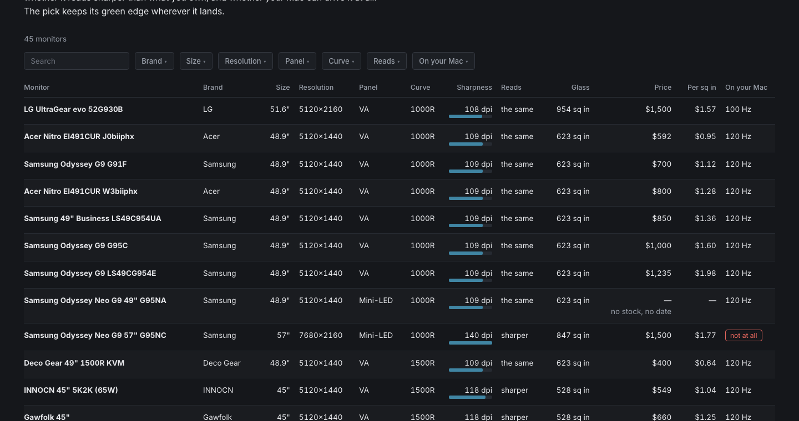
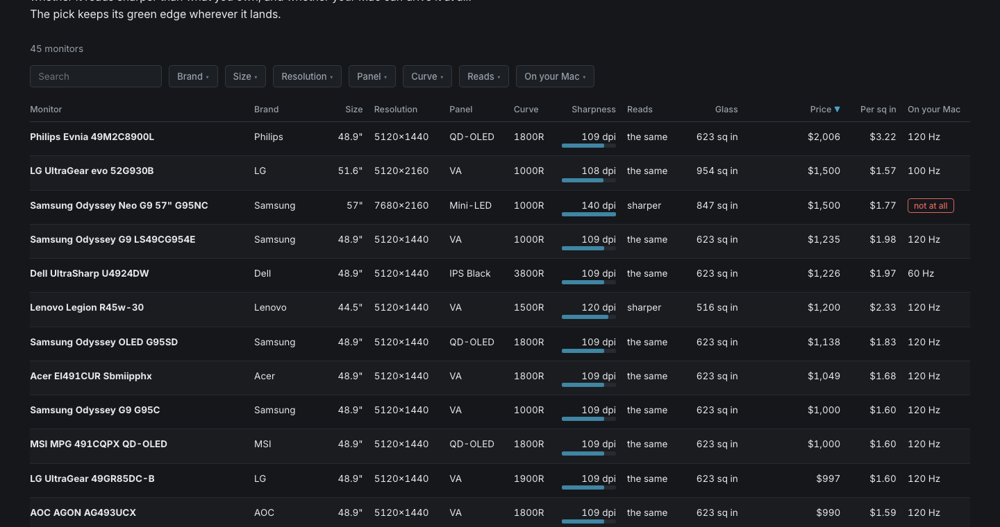
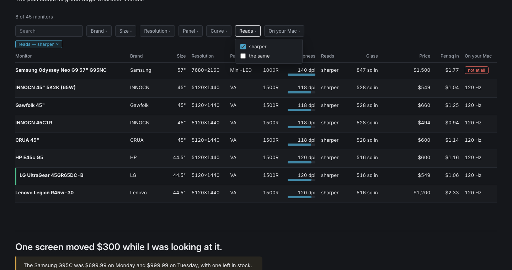
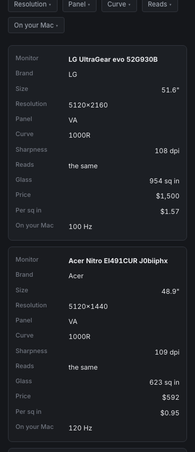
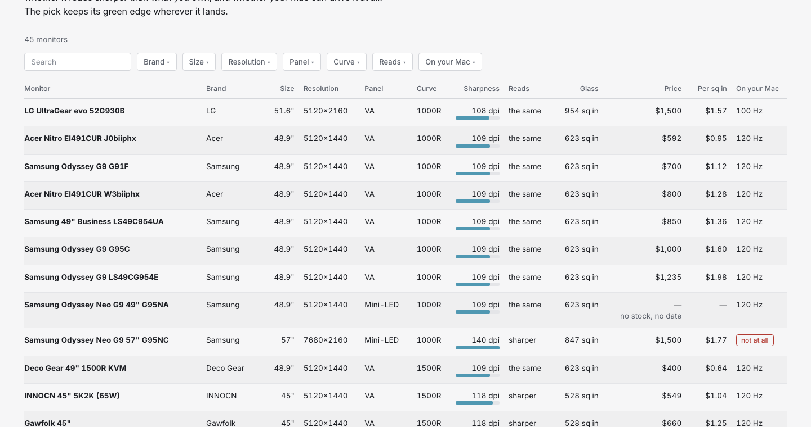

Six claims about the comparison table, each with the render that shows it.
Every capture below is the real findings page, driven in a browser and photographed. Nothing is drawn or described.
✓Sort by any of the six sortable columns and every column heading stays on the pixel it was on.
You open the findings page and the table is in source order, 45 rows across 12 columns. You click Price. The rows reorder, the arrow appears on that heading, and nothing else on the page moves — not the column you were reading, not the one your eye was about to go to.

At rest — source order.

Sorted by price. Same columns, different rows.
✓Filtered to the eight screens that read sharper, the recommendation sits seventh — still tinted, still edged green.
You open the Reads filter and tick "sharper". The table drops from 45 rows to 8, the count above changes to 8 of 45, and the filter appears under the search box as a pill. The LG is not at the top of what is left. It is not the cheapest or the sharpest — it is the one worth buying, and it says so with its edge rather than its position.

✓In the same capture the menu is still open, one box ticked, and the table underneath has already filtered.
You click Reads, the menu opens over the table, you tick "sharper" and the rows change under it. The menu is still there, so you can tick the second value without reopening anything. Clicking anywhere outside closes it.
✓Sorted by price, the most expensive screen that exists is top at $2,006, and the six with no price sit at the bottom either way.
Six of the 45 cannot be bought — the seller's page is gone, or it is out of stock with no restock date. They are still on the table, because a monitor you cannot buy is a finding. Their price cell reads a dash. Sort ascending or descending and they stay at the bottom.
✓At 390 pixels the table stops being a table: each row is a card and every value wears its column name.
You open the same page on your phone. There is no sideways scrolling and no pinching. Numbers keep a right edge so they line up down the card; words start at the left, because a sentence does not want a ragged right margin. The magnitude bar is dropped — the number is right beside it, so the bar would only repeat itself.

✓The same table in light keeps its banding, its green edge and its ruled-out chip.
You press the sun in the top right. Every color swaps to its light value — the four meanings hold, and the contrast was picked for white rather than inherited from the dark version and lightened.

Captured 12 August 2026 from the live findings page at 1440 and 390 pixels, in Chrome, by driving the real controls. The six unbuyable monitors are real: their pages are gone or out of stock with no restock date.